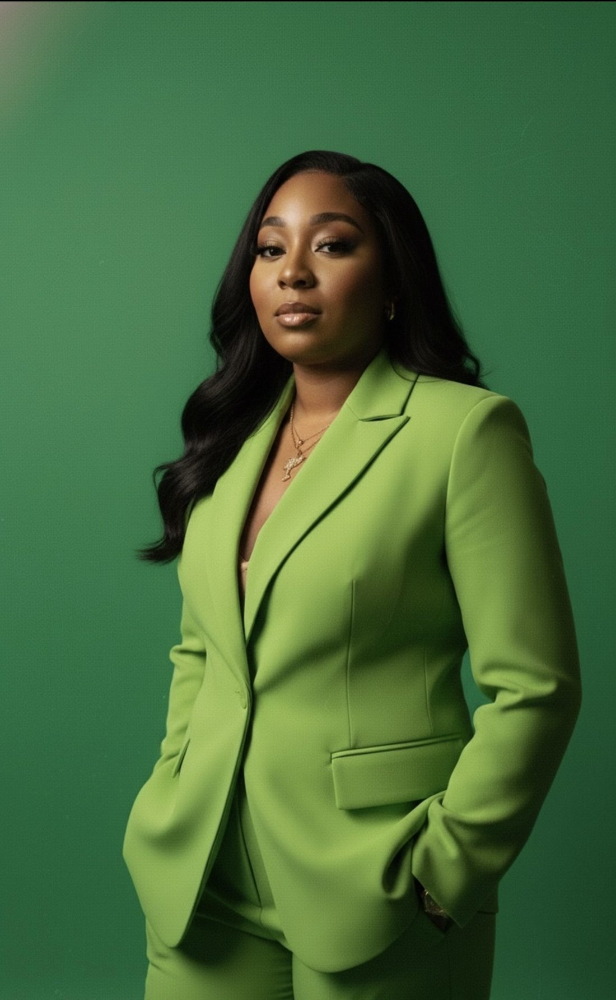

Chief Executive Officer
Leads the community development authority that owns and stewards the McKinney Center for Community & Economic Development.
Since 2023Seattle, Washington / Central District
Serial servant leader. First CEO of the McKinney Center for Community & Economic Development, chair of the Seattle Martin Luther King Jr. Organizing Coalition, and a builder of rooms where Black community, culture, and ownership belong.


“I wake up, I eat, I sleep, I breathe this work.” On The Day with Trae
Her story
Shaudé L. Moore leads from lived experience. A proud graduate of Federal Way Public Schools, she has spoken openly about overcoming homelessness as a young mother, and that journey shapes everything she builds: trust, accountability, and a refusal to leave anyone behind.
She returns to the classrooms that raised her as a longtime volunteer and advisory board member with IGNITE Worldwide, sharing her story so the next generation can see a path into STEM, the trades, and leadership.
Her career bridges corporate and community. Since 2014 she has grown with Amazon Web Services, from datacenter security leadership to Senior Global Program Manager, while serving as Corporate President of Amazon’s Black Employee Network. In 2023 she stepped into a historic role as the first CEO of the McKinney Center, the Central District institution she had helped govern since its very first board meeting.
She holds a Bachelor of Science in Human Services and an MBA, and is completing her Doctorate of Education in Organizational Leadership at City University of Seattle.
The work
The six-story building at 2120 S Jackson Street opened in the Civil Rights era as the Seattle Opportunities Industrialization Center, Rev. Dr. Samuel B. McKinney’s vision for job training and Black economic mobility. Today it is owned outright by the Central District Community Preservation and Development Authority, and Shaudé leads its restoration as a home for Black entrepreneurship, education, culture, and ownership.
“This building is a living institution. It holds space for Black entrepreneurship, education, culture, and ownership in a neighborhood that has been told for 20 years that those things no longer belong here. They do. And this building proves it.”
The Seattle Medium, 2026
Serves as vice president and secretary of the CDCPDA board from its inception, the youngest Black woman to hold a seat on the board.
Ownership of the former Seattle Vocational Institute transfers to the CDCPDA, returning the property to the community it was built to serve.
Named the first chief executive of the McKinney Center, charged with leading a roughly $30 million renovation vision.
The City of Seattle’s Equitable Development Initiative awards $1,473,204 toward rehabilitation of the center.
Launches a partnership with Black Legacy Homeowners to advance homeownership, prevent displacement, and build generational wealth.
Secures an Office of Sustainability & Environment grant to invest in energy efficiency for the historic building.
Hosts Springing Forward: Brunch for Black Economic Brilliance, honoring Rev. McKinney’s 100th birthday under the theme Collaborate. Sustain. Thrive.
The Landmarks Preservation Board votes to designate the McKinney Center, protecting its site, exterior, atrium stair, and atrium volume.
Co-hosts a community conversation on AI and digital equity inside the center.
“We view the renewal of The McKinney Center as a renewal of our community every step of the way.”
“This is more than a building. It’s a home for empowerment, connection, and ownership.”
“When we invest in preserving our institutions, we ensure our community doesn’t just survive, it thrives.”
Where she serves
Leads the community development authority that owns and stewards the McKinney Center for Community & Economic Development.
Since 2023Guides one of the largest Martin Luther King Jr. Day celebrations on the West Coast.
Leads BEN across Amazon after serving as president of the Seattle HQ chapter, honored as the network’s largest chapter.
More than a decade at AWS, rising from datacenter and edge security leadership to global programs.
Since 2014Serves on the executive committee of one of the region’s oldest civil rights institutions.
Joins the commission bringing community voice to how Seattle hosts and benefits from major sporting events.
Opens doors for girls and young people in STEM and the skilled trades.
The MLK legacy
Shaudé Moore, in the Bellingham Herald, January 2026
Shaudé made history as the youngest woman voted chair of the Seattle Martin Luther King Jr. Organizing Coalition and the first woman to lead it, carrying forward a grassroots tradition that fills Garfield High School and the streets of King County every January.
Under her leadership the coalition pairs the march and rally with a Youth Impact Forum and the MLK Opportunity Fair, connecting King’s call to jobs, training, and young leaders. The 2027 march will be the 44th in King County.
“When you march, when you think of voting, when you volunteer and you’re raising your voice for justice, are you thinking about answering Dr. King’s call?”
Recognition
Recognized by business, civic, and community institutions across the Pacific Northwest.
The McKinney Center, under her leadership, earns landmark status from the City of Seattle.
Honored by the Seattle King County MLK Jr. Commemoration and Continuation Committee.
Puget Sound Business Journal, selected among the region’s most influential young leaders.
Amazon Black Employee Network Seattle HQ chapter, recognized at the BEN Global Summit.
MLK Commemoration Committee.
Celebrated among 16 female achievers.
In the press
Speaking & partnerships
Shaudé speaks to corporate, civic, and youth audiences on the topics she lives every day.